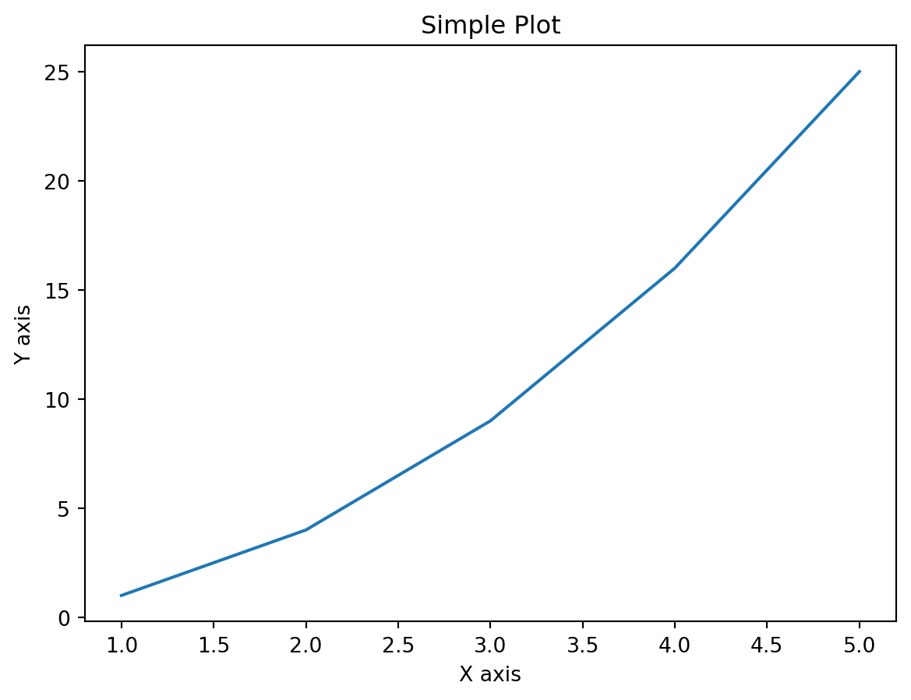
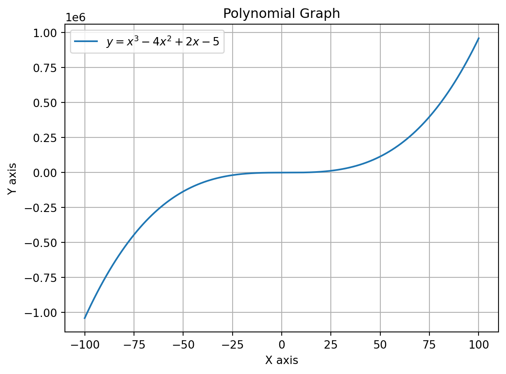

from ipyleaflet import Map, Marker, basemaps, basemap_to_tiles
m = Map(
basemap=basemap_to_tiles(
basemaps.NASAGIBS.ModisTerraTrueColorCR, "2017-04-08"
),
center=(52.204793, 360.121558),
zoom=4
)
m.add_layer(Marker(location=(52.204793, 360.121558)))
m5 interactive
I love python
import matplotlib.pyplot as plt
# Data for plotting
x = [1, 2, 3, 4, 5]
y = [1, 4, 9, 16, 25]
# Create the plot
plt.plot(x, y)
# Add a title and labels
plt.title('Simple Plot')
plt.xlabel('X axis')
plt.ylabel('Y axis')
# Show the plot
plt.show()
import numpy as np
import matplotlib.pyplot as plt
# Generate x values
x = np.linspace(-100, 100, 4000) # Creates 400 points between -10 and 10
# Define the polynomial: y = x^3 - 4x^2 + 2x - 5
y = x**3 - 4*x**2 + 2*x - 5
# Plot the polynomial
plt.plot(x, y, label=r'$y = x^3 - 4x^2 + 2x - 5$')
# Add title and labels
plt.title('Polynomial Graph')
plt.xlabel('X axis')
plt.ylabel('Y axis')
# Show grid and legend
plt.grid(True)
plt.legend()
# Show the plot
plt.show()
polynomial